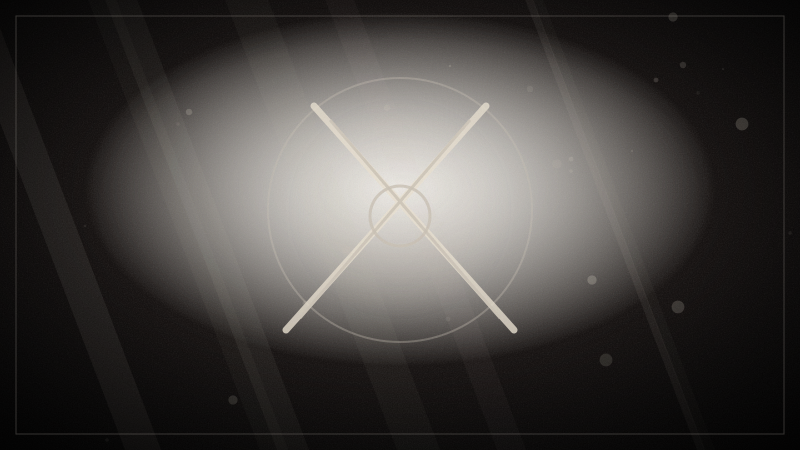

Sin spoilers
El Espadachín Negro
Un hombre armado con un mandoble imposible recorre aldeas y ciudades persiguiendo apóstoles. Mata sin explicaciones y apenas habla. Cuando un elfo se empeña en seguirle, el relato deja entrever que detrás de esa furia hay algo más que venganza.
Es la puerta de entrada a un mundo donde los monstruos llevan rostro humano y los héroes no tienen nada de heroico.